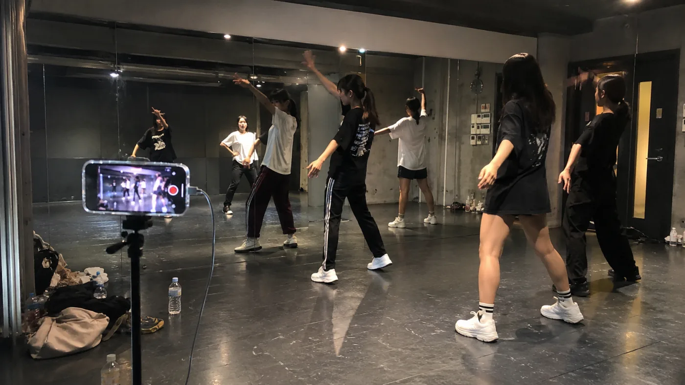
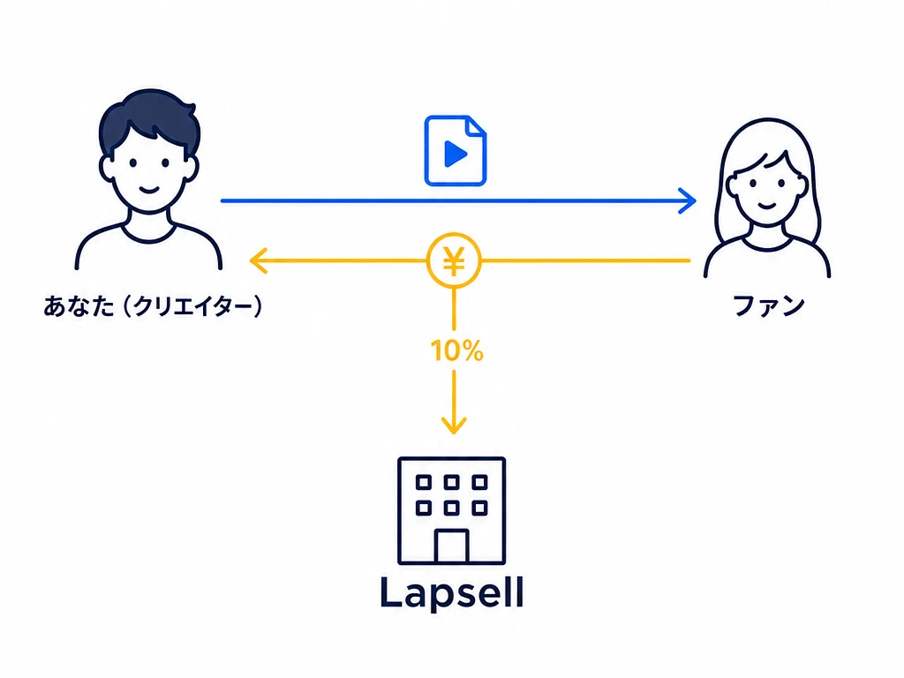
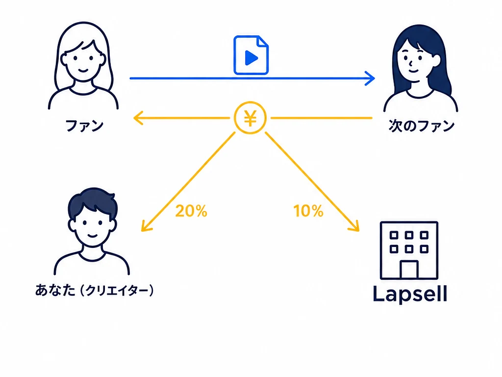

あなたの試行錯誤には、
価値がある。
Lapsellは、練習や制作過程の記録を、世界に一つの一点物のデジタルグッズとしてファンに販売できるマーケットプレイスです。
今だけ
全て無料で先行利用に登録する
初期費用・月額費用は不要。かかるのは売れたときの手数料だけです。

Lapsellは、練習や制作過程の記録を、世界に一つの一点物のデジタルグッズとしてファンに販売できるマーケットプレイスです。
初期費用・月額費用は不要。かかるのは売れたときの手数料だけです。
Problem
練習、制作、下積み。活動時間の大半を占めるその作業時間は、いまは1円にもなっていません。

練習をそのままライブ配信しても、無名のうちは投げ銭はほとんど集まりません。

映り込みや失言は取り消せません。収益にならないのに、リスクだけが残ります。

カット、テロップ、サムネイル。時間を奪われ、外注すれば赤字です。
一番長く過ごしている試行錯誤の時間が、いまは誰にも届かないまま消えています。
Lapsellは、その時間を収益に変えるサービスです。
About
練習動画や制作過程の「裏側」を、一点物のデジタルグッズとして売買できるマーケットプレイスです。


1本の練習を数分ごとのクリップに分け、それぞれを一点物として販売します。売れたクリップは、買った人だけのものになります。

買ったクリップは、世界地図の好きなセルに1つ埋められます。本人の近くから埋まるので、場所そのものが「早くから推していた」証明になります。
Flow
出品してから、ファンに届いて、あなたに還元されるまで。

Step 1
いつもの練習をスマホで撮ってアップするだけ。AIが見どころを切り出し、タイトルと値付けまで行います。映り込みや失言も、出品前に検知して知らせます。


Step 2
ライブ会場の物販QR、アプリ内フィード、SNSでの拡散。既存ファンも、まだあなたを知らない人も、ここから入って購入します。買われた瞬間にクリップは非公開になり、買った人だけの一点物になります。

Step 3
あなたが有名になるほど、誰も見たことのない下積み時代のクリップは、価値が上がっていきます。

Step 4
価値の上がったクリップは、ファンやコレクターの間で売買されます。売買が成立するたびに、売却益の一部があなたに還元されます。
Why it sells
推し活ファン393人へのアンケートでは、約3人に1人が、お金を払ってでも推しの制作の裏側を見たいと回答しました。うち半数近くは3,000円を超える金額を想定しています。
完成品は誰でも見られます。手に入りにくい制作の裏側だからこそ、ファンにとって価値があります。
「推しの裏側」に、月いくらまでなら払えるか
出典：自社アンケート。youtubeのアンケート機能で一般人393人に調査。
アクリルスタンドや缶バッジ、ランダムトレカなど、既存のグッズはどれも、隣のファンと同じ量産品です。
世界に一つだけのクリップは、自分だけのものを求めるファンにとって、他に代えのきかない選択肢になります。既存の量産グッズにはない、新しい種類の商品です。

買うのは、いまのファンだけではありません。次にブレイクする才能を誰より早く見つけたいという人たちも、新人のクリップを見て回っています。下積み時代のクリップは安く手に入り、ブレイクすれば価値が大きく上がるからです。
そのため、下積み時代のクリップは発掘の対象になります。こうした閲覧やSNSでの拡散を通じて、まだファンでない人にもクリップが届き、認知がファンの外へ広がります。

クリップを買うと、ラプセルマップ上で好きなセル（区画）を一つ、先着順で取得できます。活動拠点やゆかりの地に近いセルほど早く埋まるため、地図上の場所そのものが、早くから応援していた証しになります。
クリップの内容に加えて、「この場所が空いているうちに手に入れたい」という理由が生まれます。いつもの練習風景にも、ファンが今買いたくなるきっかけをつくる仕組みです。

Pricing
一次流通
出品したクリップが、最初の購入者に売れる

二次流通
購入されたクリップが、ファン同士で再び売買される

登録・出品 0円
FAQ
練習動画、作業配信のアーカイブ、制作過程のタイムラプス、リハーサルやネタ合わせの記録など、「裏側」が映っていればジャンルを問いません。完成品である必要はなく、いつもの練習時間・作業時間の記録がそのまま商品になります。
ありません。YouTubeのような登録者数・総再生時間の条件は一切なく、1本目のクリップからすぐに販売・収益化できます。
はい。編集は一切不要です。撮った動画をそのままアップロードすれば、AIが見どころごとの切り分け・タイトル案・値付けまで自動で行います。内容を確認して出品ボタンを押すだけです。
アップロードされた動画はAIが出品前にチェックし、映り込み・失言などの可能性がある箇所を検知して警告します。生配信と違い、公開前にあなた自身が確認・除外できるので、事故が世に出ることを防げます。
Lapsellには、既存ファンだけでなく「新人を発掘したい」「値上がり前のクリップを集めたい」というユーザーがフィードを回遊しています。SNSでの拡散を通じて、まだファンでない人にもクリップが届く仕組みです。
登録・出品は無料です。費用が発生するのは売れたときの手数料のみで、売れなければ一切かかりません。
購入された瞬間に非公開となり、購入者だけが視聴できる「世界に一つの一点物」になります。購入者はラプセルマップ上の好きなセルにクリップを置いて所有を見せることができ、Lapsellの市場で売買することもできます。売買が成立するたびに、売却益の一部が出品者であるあなたに還元されます。
クリップを購入した人が、世界地図上の好きなセル（区画）を先着順で1つ取得できる機能です。クリエイターの拠点やゆかりの地の近くから埋まっていくため、地図上の場所そのものが「早くから推していた」証明になります。セルには所有者名・メッセージ・クリップの数秒の見どころを載せられます。載せるかどうかは購入者と出品者それぞれの設定で選べ、クリップ本編は非公開のままです。
捨てられることはありません。権利はあなたのままLapsellが無料で保管し、あなたがブレイクした後に、あなたの同意のもと「この当時の映像です」とあなた自身が紹介する公式アーカイブとして、ライブ会場の物販QRや配信で販売し、売上をあなたと分け合います。あなたが望まないクリップが販売されることはありません。
今日の練習が、明日には誰かの「世界に一つのグッズ」になります。
登録は無料。売れるまで、費用は一切かかりません。
Contact